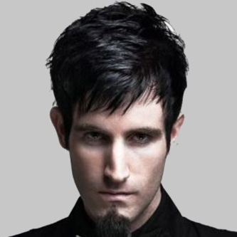
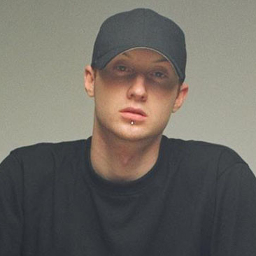
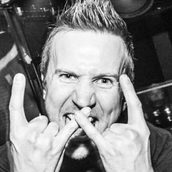
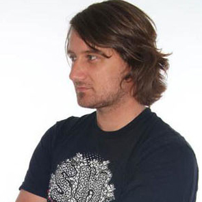
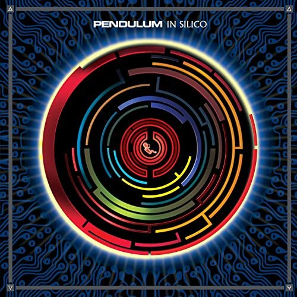
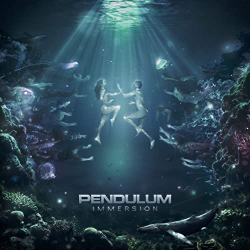

Hover over the image for details on the band member.
   
Released in 2005, the album cover inspired the single cover for the later release of "Witchcraft". The album was certified gold in Australia, and peaked at No.2 in the UK dance albums Chart, with Slam hitting the top 40 UK singles Chart, and is the Debut album of the band. In 2007 the album was reissued by Breakbeat Kaos, and the with the single "Blood Sugar" replacing the song "another Planet and "still Grey" considering how popular it was.
Released in 2008, In Silico contained a different kind of sound considering the last album, mixing more oh the band's rock history while, still maintaining the main electro elements. The album peaked at No.2 on the UK Albums Chart, and No.9 in Australia's Albums Chart. due to the success, the band filmed a live DVD of the concert held at Brixton Academy, releasing in April 2009, with Paul Kodish leaving the band later.
Released in 2010, Immersion hit No.1 on the UK Albums Chart, featuring electro, house and metal styles further broadening their style of music, even having a metal band heavily featured in the song "Self Vs Self". The Song "salt in the Wounds music video is unique in the fact that it is claimed to be the worlds first 360° interactive music video. Immersion was also supposed to release with the song "Ransom", but unfortunately the originial files were corrupted, with no plans to recreate them, but they ended up being released as a single in 2011 on their website, with the proceeds going to the Help for Japan after the Tsunami